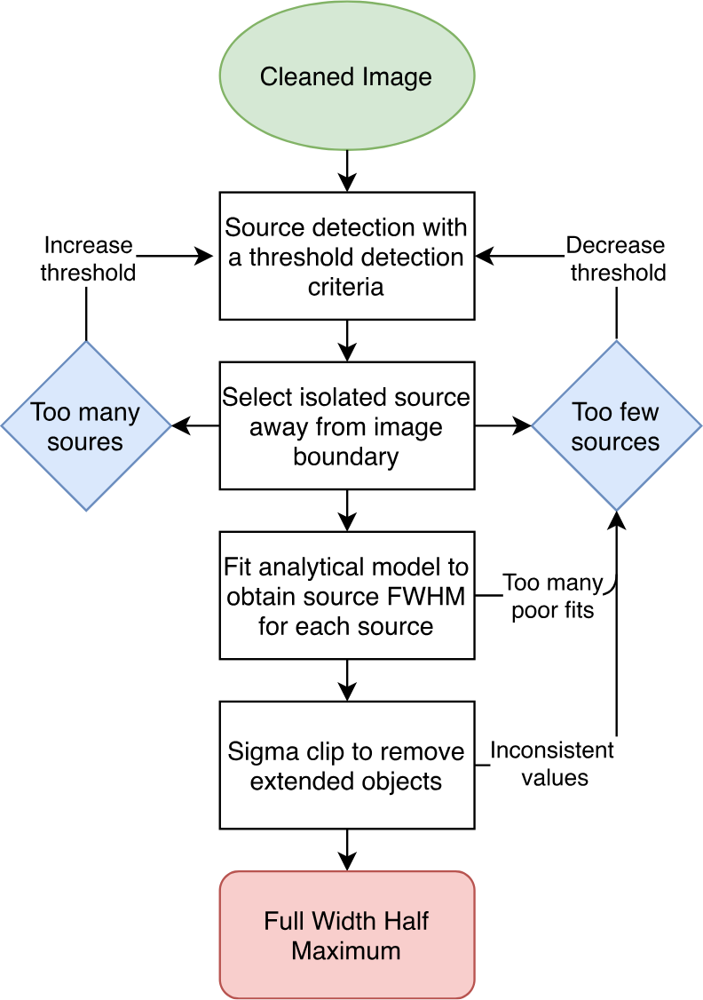

The Automated Photometry of Transients pipeline (AUTOPHOT)
Brennan, S. J., & Fraser, M. · Astronomy & Astrophysics 667, A62 (2022)
Overview
Background. Time-domain astronomy runs on light curves built from many telescopes and programmes. Forced photometry (measuring flux at a known position even when a source is faint) is central to survey follow-up, but results must be reproducible and easy to share.
Science. AUTOPHOT is a Python pipeline that automates photometry for transients, including forced measurements, uncertainty treatment, and workflows aligned with survey-style data. The paper documents design choices, performance tests, and practical use.
Impact. A published, citable pipeline lets other groups rerun the same analysis, compare methods fairly, and build on a common baseline. That is standard in many fields and increasingly expected in optical transient work. It also underpins several observational projects on this site.
Key figuresfrom the paper



More panels (zeropoint diagnostics, limiting-magnitude injection tests, DAOPHOT comparisons) are in the arXiv HTML and PDF versions.